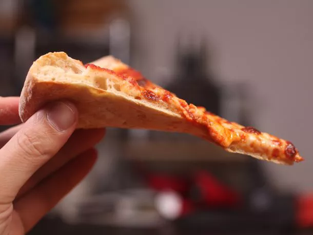

New York-Style Pizza

Description
This New York-style pizza features a thin, crispy crust with a chewy interior, topped with a rich tomato sauce and gooey mozzarella cheese. It's perfect for folding and eating on the go!
Ingredients
- 22 1/2 ounces bread flour, plus more for dusting (638 g; about 4 1/2 cups)
- 0.5 ounce granulated sugar (15 g; about 1 1/2 tablespoons)
- 0.35 ounce kosher salt (10 g; about 1 tablespoon)
- 0.35 ounce instant yeast (10 g; about 2 teaspoons)
- 15 ounces lukewarm water (415 g; about 1 3/4 cups) (see notes)
- 3 tablespoons (45 ml) extra-virgin olive oil
- 1 batch New York style pizza sauce
- 1 pound grated full-fat dry mozzarella cheese (454 g; about 4 cups), placed in freezer for at least 15 minutes
Instructions
- Combine flour, sugar, salt, and yeast in bowl of food processor. Pulse 3 to 4 times to incorporate. Add water and olive oil. Run food processor until mixture forms ball that rides around the bowl above the blade, about 15 seconds. Continue processing 15 seconds longer.
- Transfer dough ball to lightly floured surface and knead once or twice by hand until smooth ball is formed. It should pass the windowpane test. Divide dough into three even portions and place each in a covered quart-sized deli container or in a zipper-lock freezer bag. Place in refrigerator and allow to rise at least 1 day, and up to 5.
- At least two hours before baking, remove dough from refrigerator and shape into balls by gathering dough towards bottom and pinching shut. Flour well and place each dough ball in a separate medium mixing bowl. Cover tightly with plastic wrap and allow to rise at warm room temperature until roughly doubled in volume.
- One hour before baking, adjust oven rack with pizza stone to middle position and preheat oven to 500°F (260°C). Turn single dough ball out onto lightly floured surface. Gently press out dough into rough 8-inch circle, leaving outer inch higher than the rest. Gently stretch dough by draping over knuckles to form a 12- to 14-inch circle about 1/4-inch thick. Transfer to pizza peel.
- Spread approximately 2/3 cup sauce evenly over surface of crust, leaving 1/2- to 1-inch border along edge. Evenly spread 1/3 of cheese over sauce. Slide pizza onto baking stone and bake until cheese is melted with some browned spots and crust is golden brown and puffed, 12 to 15 minutes. Transfer to cutting board, slice, and serve immediately. Repeat with remaining two dough balls, remaining sauce, and remaining cheese.
Back
Home